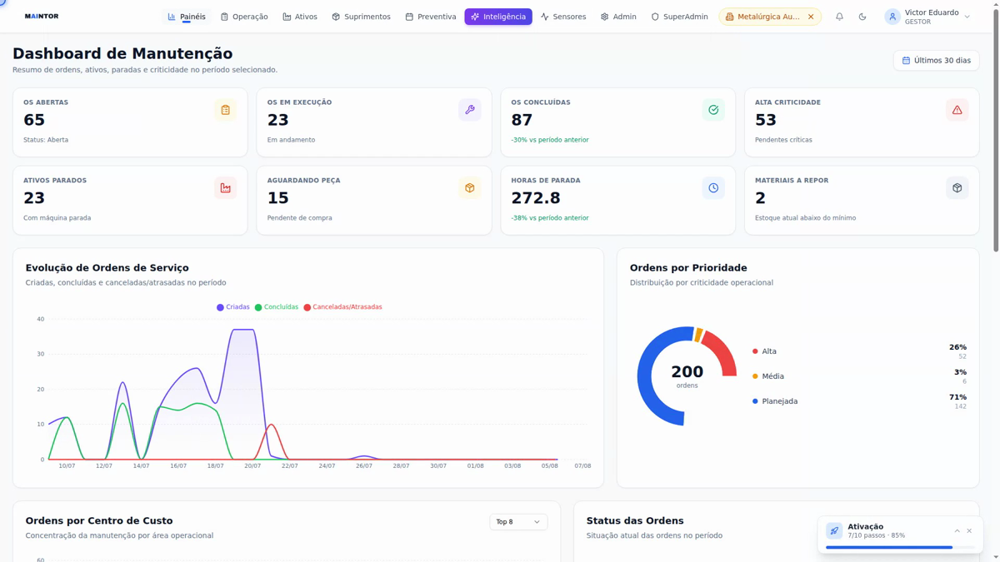
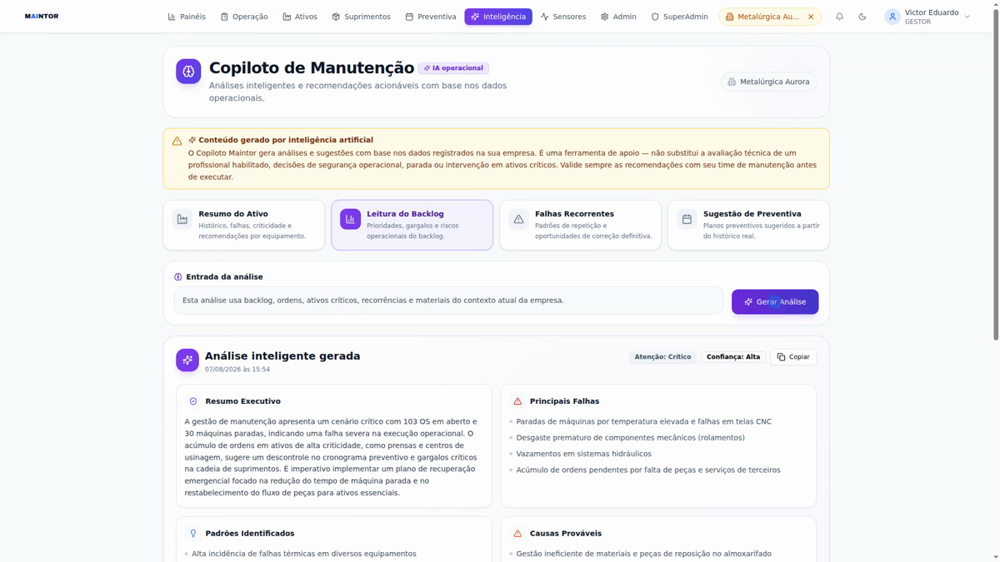
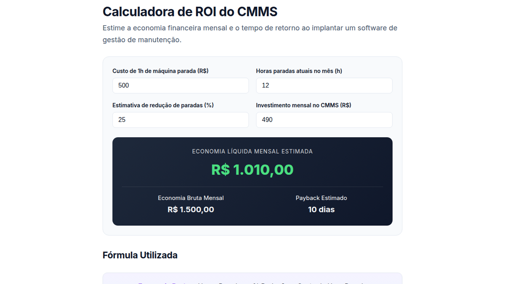
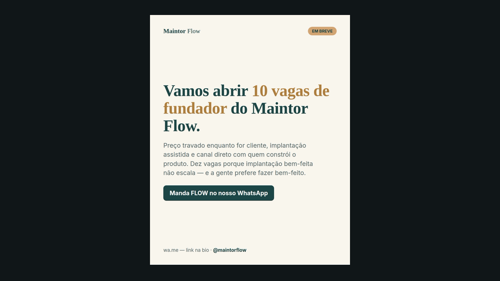

A maioria entrega uma das duas metades: o dev some depois do deploy, a agência não entende o produto. Eu faço o caminho inteiro — do banco de dados ao anúncio que traz gente para dentro.
Duas frentes que se completam. Dá para contratar uma só — mas é quando andam juntas que o resultado aparece rápido.
Sistemas que resolvem o processo real da empresa — não um template adaptado na marra.
Presença construída para trazer cliente, com máquina que continua funcionando quando ninguém está olhando.
Tudo aqui está no ar e pode ser aberto agora. As imagens são telas reais do sistema rodando — nenhuma é maquete.
Plataforma completa de manutenção industrial: ordens de serviço, ativos com histórico, preventivas, estoque que baixa sozinho quando o técnico aponta a peça, e painel preditivo.

O gestor pergunta em português e a IA lê os dados reais da fábrica — histórico do equipamento, falhas parecidas, ordens abertas — e devolve causa provável e o que verificar primeiro. IA que usa o dado da empresa, não que responde de forma genérica.

Landing de venda mais 33 páginas de conteúdo técnico — glossário, artigos e calculadoras interativas que respondem o que o cliente pesquisa no Google e trazem visita todo dia, sem pagar por clique.

Um sistema que grava a tela do produto, edita o vídeo com narração e legenda, publica nas redes no horário certo, responde o WhatsApp de quem chega e me avisa no celular quando precisa de decisão humana.

Sem proposta de 40 páginas e sem sumir no meio do caminho.
20 minutos para entender o processo real e onde dói. Se eu não for a pessoa certa, digo na hora.
O que entra, o que fica de fora, prazo e preço em uma página. Sem letra miúda.
Você vê funcionando desde a primeira semana e corrige o rumo cedo, não no fim.
Publicar é o começo. Acompanho o que acontece com usuário de verdade e ajusto.
Se for algo que eu não faço bem, eu falo — e indico quem faz. A conversa é rápida e sem compromisso.
Chamar no WhatsApp